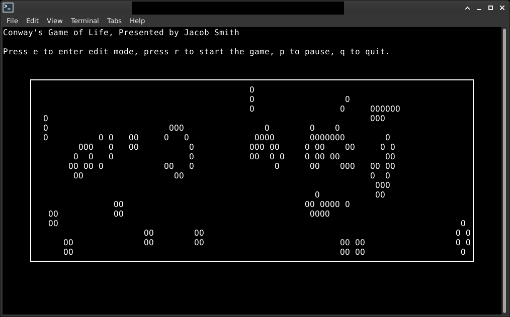

Conway's Game of Life
Implemented Conway's Game of Life as a terminal application which allows editing, saving, and loading of patterns.
The game follows four basic rules:
- 1. Any live cell with fewer than two live neighbors dies, as if by underpopulation.
- 2. Any live cell with two or three live neighbors lives on to the next generation.
- 3. Any live cell with more than three live neighbors dies, as if by overpopulation.
- 4. Any dead cell with exactly three live neighbors becomes a live cell, as if by reproduction.
You can download the game yourself from the repository.
I wrote this game to learn how to use the Python Curses and Numpy libraries for writing basic terminal applications.
